2023 National 5 Biology - Paper 1 questions
Source: Scottish Qualifications Authority (SQA) / Qualifications Scotland. This is a StemInteract HTML companion, not an official HTML edition. Selectable text is supplied alongside original page images. Use the images or original PDF for equations, powers, fractions, vector notation, tables and diagrams; text extraction cannot fully preserve mathematical layout.
Jump to a question
PDF page 1
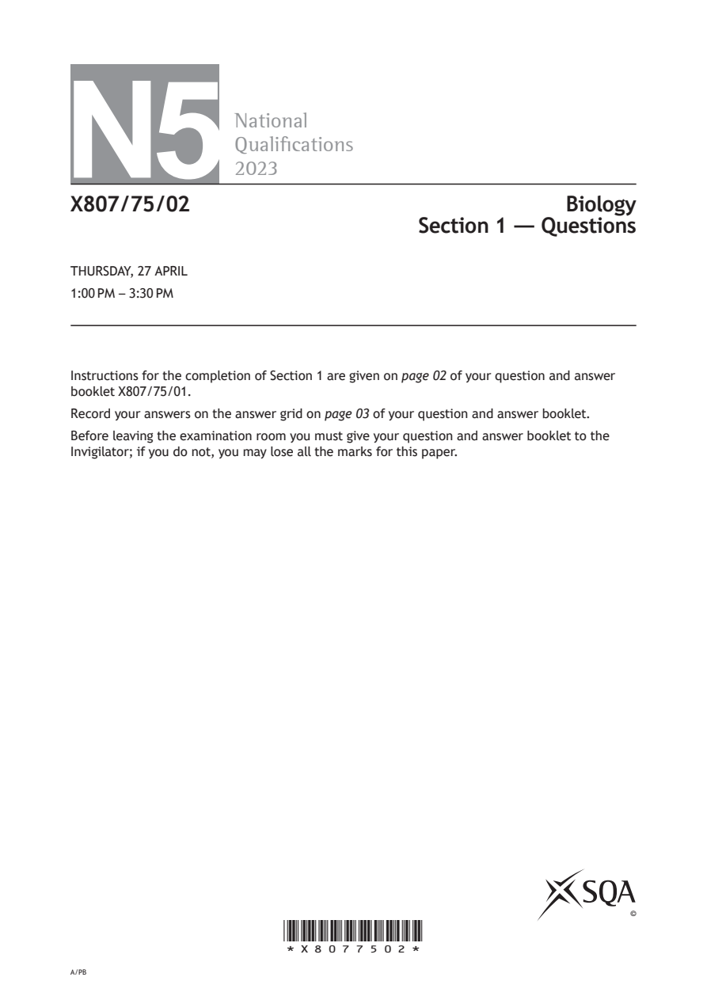
Selectable page text
N5
National
Qualications
2023
X807/75/02 Biology
Section 1 — Questions
THURSDAY, 27 APRIL
1:00 PM – 3:30 PM
Instructions for the completion of Section 1 are given on page 02 of your question and answer
booklet X807/75/01.
Record your answers on the answer grid on page 03 of your question and answer booklet.
Before leaving the examination room you must give your question and answer booklet to the
Invigilator; if you do not, you may lose all the marks for this paper.
©
*X8077502*
A/PBPDF page 2
Paper 1, Question 1Paper 1, Question 2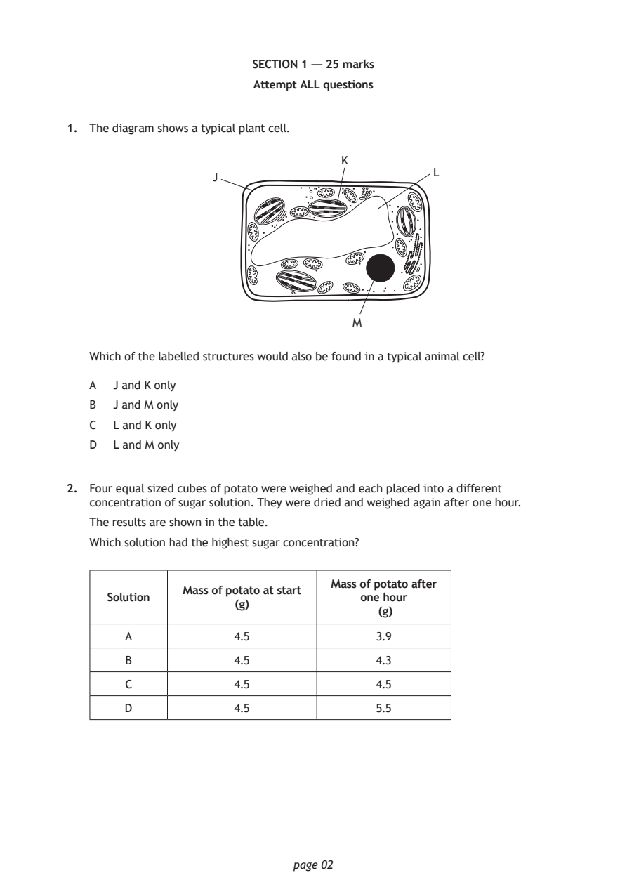
Selectable page text
SECTION 1 — 25 marks
Attempt ALL questions
1. The diagram shows a typical plant cell.
K
L
J
M
Which of the labelled structures would also be found in a typical animal cell?
A J and K only
B J and M only
C L and K only
D L and M only
2. Four equal sized cubes of potato were weighed and each placed into a different
concentration of sugar solution. They were dried and weighed again after one hour.
The results are shown in the table.
Which solution had the highest sugar concentration?
Mass of potato after
Mass of potato at start
Solution one hour
(g)
(g)
A 4.5 3.9
B 4.5 4.3
C 4.5 4.5
D 4.5 5.5
page 02PDF page 3
Paper 1, Question 3Paper 1, Question 4Paper 1, Question 5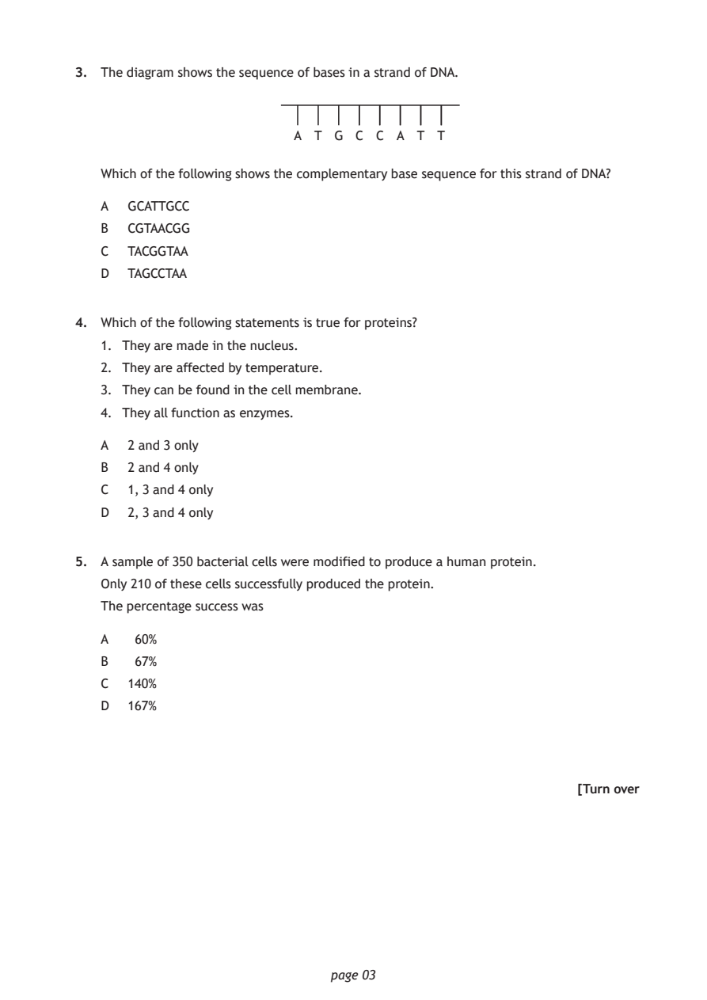
Selectable page text
3. The diagram shows the sequence of bases in a strand of DNA.
A T G C C A T T
Which of the following shows the complementary base sequence for this strand of DNA?
A GCATTGCC
B CGTAACGG
C TACGGTAA
D TAGCCTAA
4. Which of the following statements is true for proteins?
1. They are made in the nucleus.
2. They are affected by temperature.
3. They can be found in the cell membrane.
4. They all function as enzymes.
A 2 and 3 only
B 2 and 4 only
C 1, 3 and 4 only
D 2, 3 and 4 only
5. A sample of 350 bacterial cells were modified to produce a human protein.
Only 210 of these cells successfully produced the protein.
The percentage success was
A 60%
B 67%
C 140%
D 167%
[Turn over
page 03PDF page 4
Paper 1, Question 6Paper 1, Question 7Paper 1, Question 8Paper 1, Question 9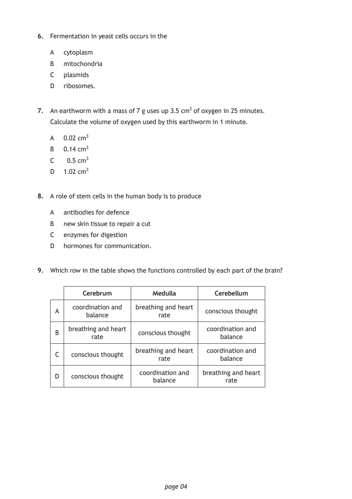
Selectable page text
6. Fermentation in yeast cells occurs in the
A cytoplasm
B mitochondria
C plasmids
D ribosomes.
7. An earthworm with a mass of 7 g uses up 3.5 cm³ of oxygen in 25 minutes.
Calculate the volume of oxygen used by this earthworm in 1 minute.
A 0.02 cm³
B 0.14 cm³
C 0.5 cm³
D 1.02 cm³
8. A role of stem cells in the human body is to produce
A antibodies for defence
B new skin tissue to repair a cut
C enzymes for digestion
D hormones for communication.
9. Which row in the table shows the functions controlled by each part of the brain?
Cerebrum Medulla Cerebellum
coordination and breathing and heart
A conscious thought
balance rate
breathing and heart coordination and
B conscious thought
rate balance
breathing and heart coordination and
C conscious thought
rate balance
coordination and breathing and heart
D conscious thought
balance rate
page 04PDF page 5
Paper 1, Question 10Paper 1, Question 11Paper 1, Question 12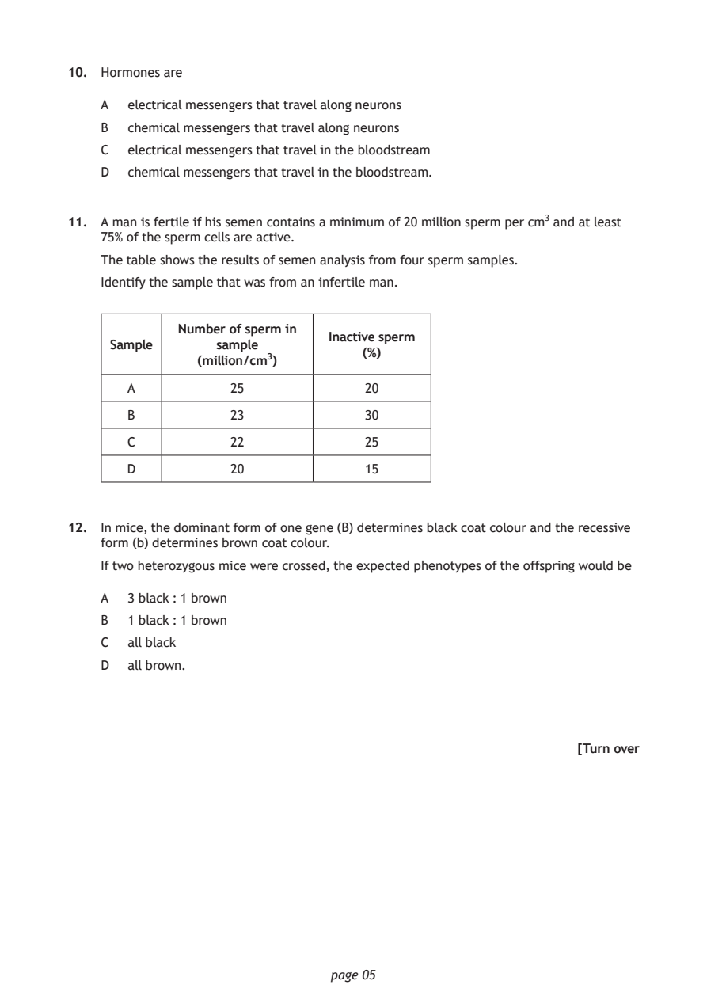
Selectable page text
10. Hormones are
A electrical messengers that travel along neurons
B chemical messengers that travel along neurons
C electrical messengers that travel in the bloodstream
D chemical messengers that travel in the bloodstream.
11. A man is fertile if his semen contains a minimum of 20 million sperm per cm³ and at least
75% of the sperm cells are active.
The table shows the results of semen analysis from four sperm samples.
Identify the sample that was from an infertile man.
Number of sperm in
Inactive sperm
Sample sample
(%)
(million/cm³)
A 25 20
B 23 30
C 22 25
D 20 15
12. In mice, the dominant form of one gene (B) determines black coat colour and the recessive
form (b) determines brown coat colour.
If two heterozygous mice were crossed, the expected phenotypes of the offspring would be
A 3 black : 1 brown
B 1 black : 1 brown
C all black
D all brown.
[Turn over
page 05PDF page 6
Paper 1, Question 13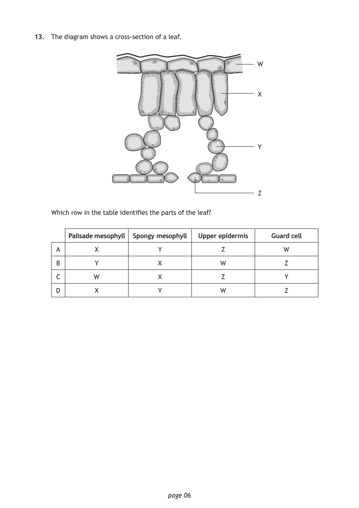
Selectable page text
13. The diagram shows a cross-section of a leaf.
W
X
Y
Z
Which row in the table identifies the parts of the leaf?
Palisade mesophyll Spongy mesophyll Upper epidermis Guard cell
A X Y Z W
B Y X W Z
C W X Z Y
D X Y W Z
page 06PDF page 7
Paper 1, Question 14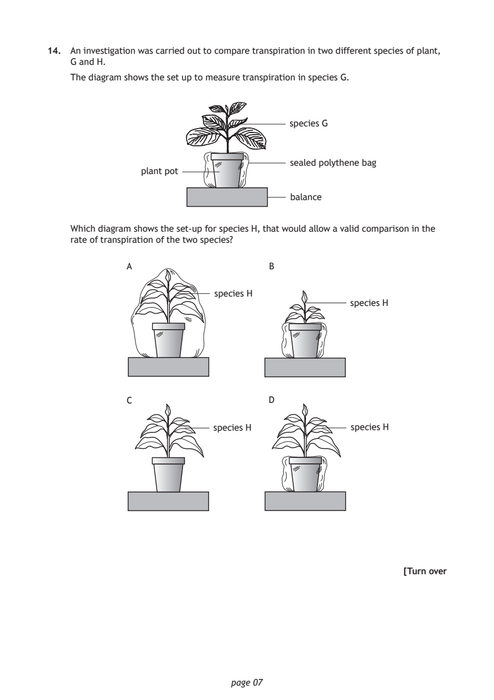
Selectable page text
14. An investigation was carried out to compare transpiration in two different species of plant,
G and H.
The diagram shows the set up to measure transpiration in species G.
species G
sealed polythene bag
plant pot
balance
Which diagram shows the set-up for species H, that would allow a valid comparison in the
rate of transpiration of the two species?
A B
species H
species H
C D
species H species H
[Turn over
page 07PDF page 8
Paper 1, Question 15Paper 1, Question 16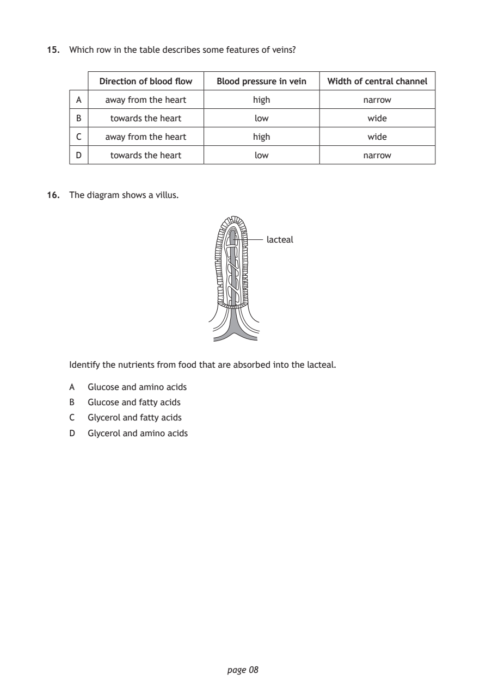
Selectable page text
15. Which row in the table describes some features of veins?
Direction of blood flow Blood pressure in vein Width of central channel
A away from the heart high narrow
B towards the heart low wide
C away from the heart high wide
D towards the heart low narrow
16. The diagram shows a villus.
lacteal
Identify the nutrients from food that are absorbed into the lacteal.
A Glucose and amino acids
B Glucose and fatty acids
C Glycerol and fatty acids
D Glycerol and amino acids
page 08PDF page 9
Paper 1, Question 17Paper 1, Question 18Paper 1, Question 19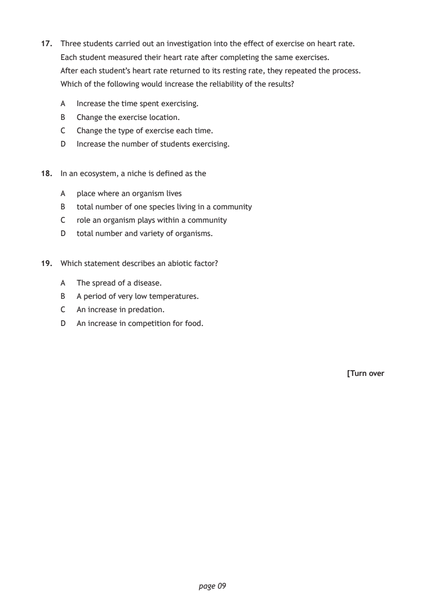
Selectable page text
17. Three students carried out an investigation into the effect of exercise on heart rate.
Each student measured their heart rate after completing the same exercises.
After each student’s heart rate returned to its resting rate, they repeated the process.
Which of the following would increase the reliability of the results?
A Increase the time spent exercising.
B Change the exercise location.
C Change the type of exercise each time.
D Increase the number of students exercising.
18. In an ecosystem, a niche is defined as the
A place where an organism lives
B total number of one species living in a community
C role an organism plays within a community
D total number and variety of organisms.
19. Which statement describes an abiotic factor?
A The spread of a disease.
B A period of very low temperatures.
C An increase in predation.
D An increase in competition for food.
[Turn over
page 09PDF page 10
Paper 1, Question 20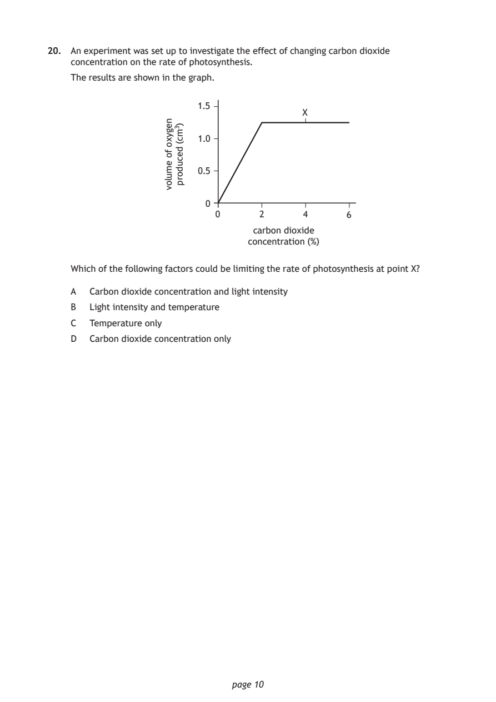
Selectable page text
20. An experiment was set up to investigate the effect of changing carbon dioxide
concentration on the rate of photosynthesis.
The results are shown in the graph.
page 10
negyxo
fo
emulov
)3mc(
decudorp
1.5
X
1.0
0.5
0
0 2 4 6
carbon dioxide
concentration (%)
Which of the following factors could be limiting the rate of photosynthesis at point X?
A Carbon dioxide concentration and light intensity
B Light intensity and temperature
C Temperature only
D Carbon dioxide concentration onlyPDF page 11
Paper 1, Question 21Paper 1, Question 22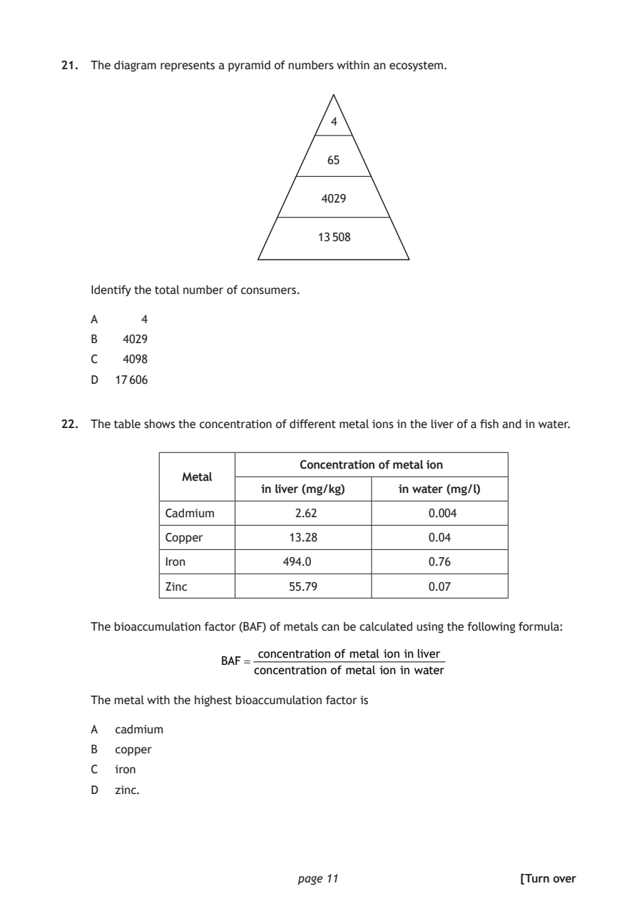
Selectable page text
21. The diagram represents a pyramid of numbers within an ecosystem.
4
65
4029
13 508
Identify the total number of consumers.
A 4
B 4029
C 4098
D 17 606
22. The table shows the concentration of different metal ions in the liver of a fish and in water.
Concentration of metal ion
Metal
in liver (mg/kg) in water (mg/l)
Cadmium 2.62 0.004
Copper 13.28 0.04
Iron 494.0 0.76
Zinc 55.79 0.07
The bioaccumulation factor (BAF) of metals can be calculated using the following formula:
concentration of metal ion in liver
BAF =
concentration of metal ion in water
The metal with the highest bioaccumulation factor is
A cadmium
B copper
C iron
D zinc.
page 11 [Turn overPDF page 12
Paper 1, Question 23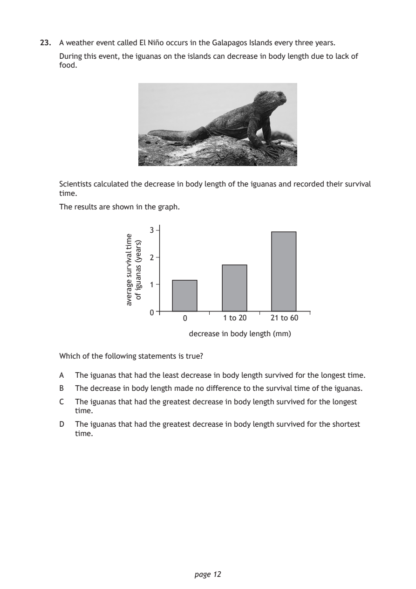
Selectable page text
23. A weather event called El Niño occurs in the Galapagos Islands every three years.
During this event, the iguanas on the islands can decrease in body length due to lack of
food.
Scientists calculated the decrease in body length of the iguanas and recorded their survival
time.
The results are shown in the graph.
page 12
emit
lavivrus
egareva
)sraey(
sanaugi
fo
3
2
1
0
0 1 to 20 21 to 60
decrease in body length (mm)
Which of the following statements is true?
A The iguanas that had the least decrease in body length survived for the longest time.
B The decrease in body length made no difference to the survival time of the iguanas.
C The iguanas that had the greatest decrease in body length survived for the longest
time.
D The iguanas that had the greatest decrease in body length survived for the shortest
time.PDF page 13
Paper 1, Question 24Paper 1, Question 25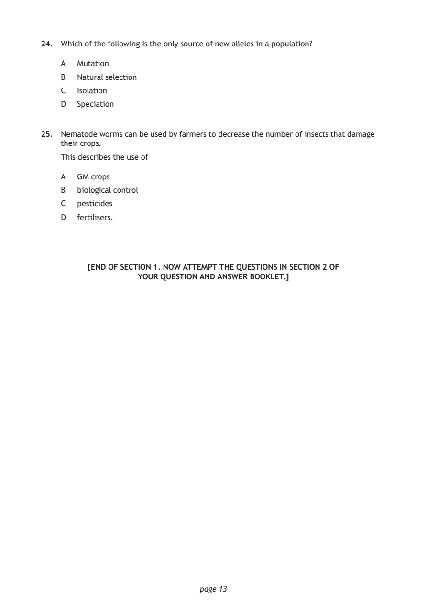
Selectable page text
24. Which of the following is the only source of new alleles in a population?
A Mutation
B Natural selection
C Isolation
D Speciation
25. Nematode worms can be used by farmers to decrease the number of insects that damage
their crops.
This describes the use of
A GM crops
B biological control
C pesticides
D fertilisers.
[END OF SECTION 1. NOW ATTEMPT THE QUESTIONS IN SECTION 2 OF
YOUR QUESTION AND ANSWER BOOKLET.]
page 13PDF page 14

Selectable page text
[BLANK PAGE]
DO NOT WRITE ON THIS PAGE
page 14PDF page 15

Selectable page text
[BLANK PAGE]
DO NOT WRITE ON THIS PAGE
page 15PDF page 16
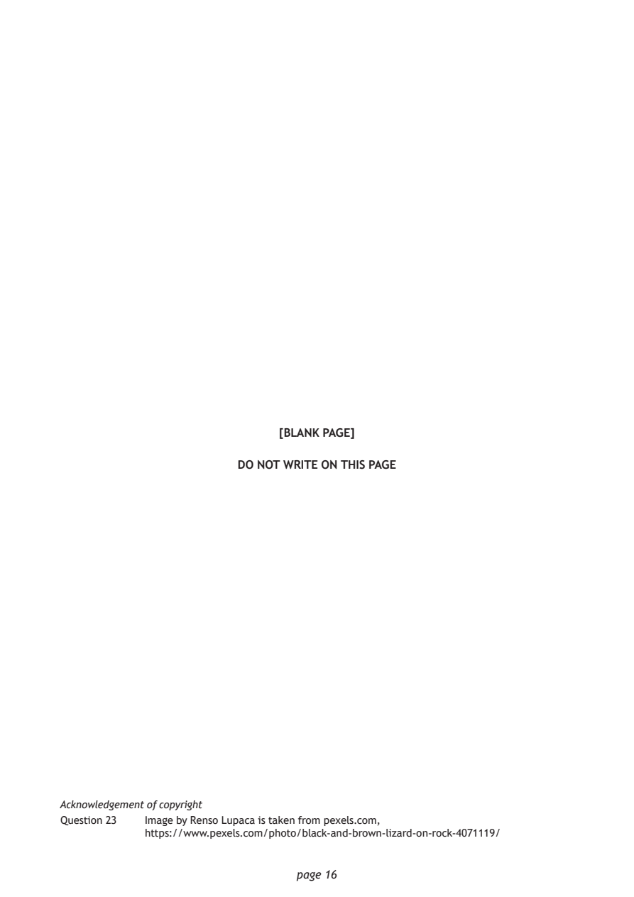
Selectable page text
[BLANK PAGE]
DO NOT WRITE ON THIS PAGE
Acknowledgement of copyright
Question 23 I mage by Renso Lupaca is taken from pexels.com,
https://www.pexels.com/photo/black-and-brown-lizard-on-rock-4071119/
page 16